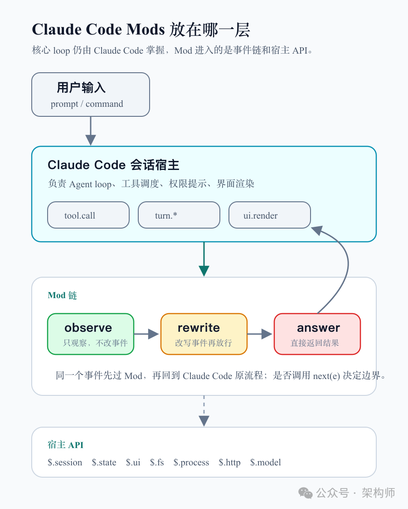
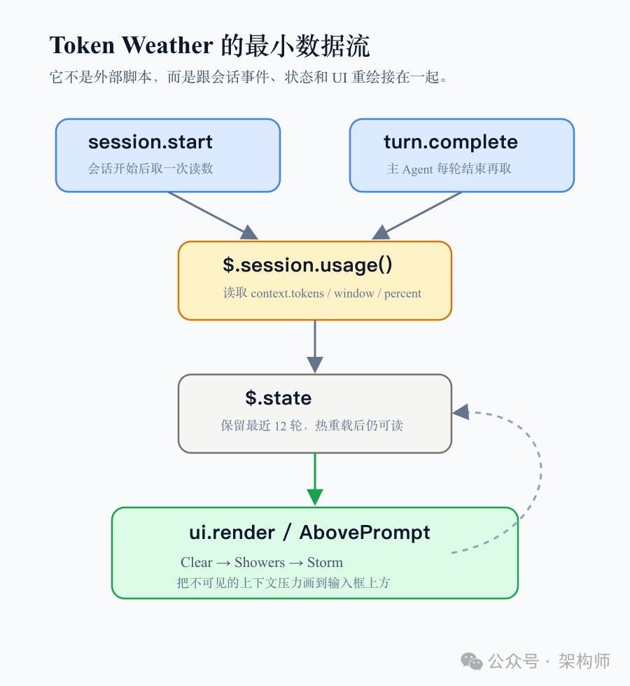
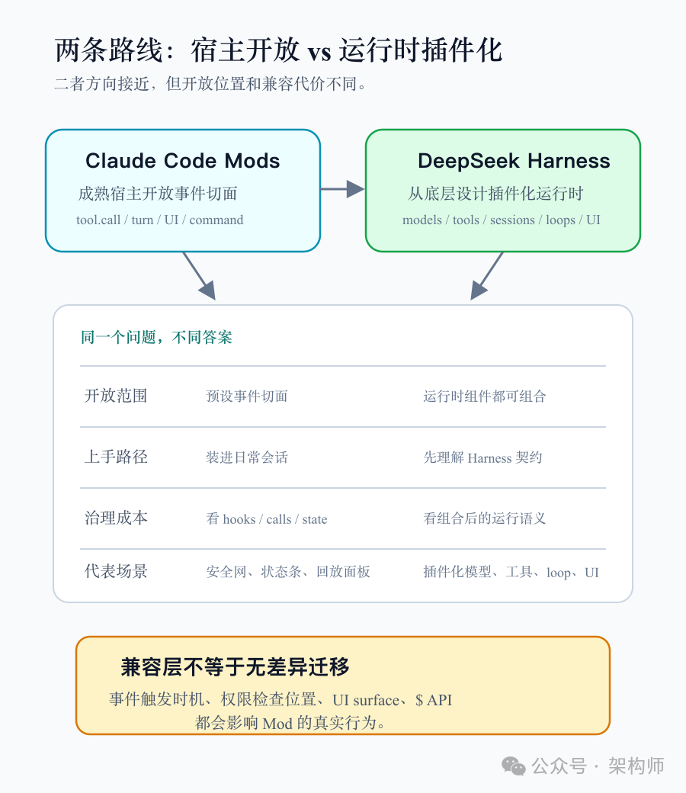

Claude Code Mods 入门指南：从零做一个 Mod
来源：微信公众号 归档日期：2026-10-05 抓取状态：成功 原文字符：12529｜配图：4 张
摘要速览
- 架构师（JiaGouX） 我们都是架构师！ 架构未来，你来不来？ 我们在 Claude Code 里让它连续读几个大文件，输入框上方多了一条很窄的状态栏。 刚开始是 Clear，后面变成 Showers，再到 Storm。旁边还有一个小图，显示最近 12 轮上下文是怎么涨上去的。
核心内容
（待补充）
可执行启发
（待补充）
我的想法
（待补充）
原文沉淀
来源：https://mp.weixin.qq.com/s/ch3z43AKlArK3q0QmAT4vw 平台：weixin｜作者：架构师 抓取方式：cdp｜字符数：13075｜图片：4
架构师（JiaGouX）
我们都是架构师！ 架构未来，你来不来？
我们在 Claude Code 里让它连续读几个大文件，输入框上方多了一条很窄的状态栏。
刚开始是 Clear，后面变成 Showers，再到 Storm。旁边还有一个小图，显示最近 12 轮上下文是怎么涨上去的。
这就是官方教程里的第一个 Mod：Token Weather。
它做的事很小：读一下当前上下文窗口用了多少，再画在输入框上方。
这个例子很小，却把 Mods 的位置露出来了：Claude Code 会话里发生事件时，开发者可以写一段 JavaScript 或 TypeScript handler，观察它、改写它，或者在某些时候直接接管。
工具调用、prompt 提交、turn 开始和结束、slash command、界面绘制，都在这个事件链上。
从零做一个 Mod，不只是写一个小插件。它更像是给 Claude Code 的运行时事件，装上一段可以安装、验证、禁用的代码。
下面顺着 Token Weather 走一遍。先看它怎么从空文件夹跑起来，再看 Blast Radius 和 Replay Theater 说明了什么，最后回到架构问题：Claude Code Mods 到底打开了 Agent Harness 的哪一层。

图 1：Claude Code Mods 放在会话事件链里
图 1：Claude Code Mods 放在会话事件链里。核心 loop 仍由 Claude Code 掌握，Mod 进入的是事件、状态、UI 和宿主 API。
最小骨架
Claude Code Mod 仍然是一个 plugin。不同的是，这个 plugin 里有一个 hooks module。
官方教程要求 Claude Code 2.1.287 或更新版本。Mods 默认开启，不需要单独打开开关。一个 Token Weather 目录大概是这样：
token-weather/
├── .claude-plugin/
│ ├── plugin.json
│ └── types/
├── hooks/
│ ├── hooks.json
│ └── token-weather.mjs
├── types/
│ └── index.d.ts
└── tests/
└── token-weather.test.ts.claude-plugin/plugin.json 是插件清单，hooks/hooks.json 指向真正的模块文件。这个模块导出一个 register(on, options) 函数，在里面把 handler 挂到事件上。
最典型的形状是这样：
on("tool.call", { tool: "Bash" }, async ($, e, next) => {
return next(e);
});$ 是 Mods API。画 UI、读 session、写 state、读文件、启动进程、注册命令、调用模型，都从这里走。
e 是当前事件的数据。比如 Bash 工具调用里会有命令，UI 绘制事件里会有组件和 props。
next(e) 是把事件交给后面的 plugin，最后交还给 Claude Code 原本的行为。
这三个参数决定了 hook 的位置和边界。这套模型很像中间件：一个事件进来，先经过当前 hook，再经过后面的 hook，最后到 Claude Code。返回值再一路传回来。
后面几个例子，会不断回到这个分岔口：这个 hook 只是看一眼，改一下，还是直接把事件处理掉。
先画一行
Token Weather 的第一步不是读 token，而是先让自己在 Claude Code 里画出东西。
官方教程选择了 AbovePrompt，也就是输入框正上方那条区域。Claude Code 自己在那里没有固定内容，拿来做第一个 Mod 很合适。
核心代码只有几行：
export function register(on) {
on("ui.render", { component: "AbovePrompt" }, ($, e, next) => {
const { Box, Text } = $.ui.resolve(e);
return Box({
paddingX: 1,
children: [
Text({ color: "yellow", bold: true, children: "Clear skies" }),
],
});
});
}这里有个细节值得留意：Box 和 Text 不是全局变量，而是从 $.ui.resolve(e) 取出来的。原因也很工程化：Claude Code 可能运行在终端，也可能运行在 Desktop 的 Code tab，不同界面支持的元素不完全一样。Mod 要根据当前 surface 拿可用组件。
加载时可以直接从本地目录启动：
claude --plugin-dir ./token-weather会话打开后，这一行字就会出现在输入框上方。文件保存后，Claude Code 会热重载这个 Mod，不需要重启会话。
这个反馈速度让 Mod 更像当前会话里的小运行时模块，而不是写完、打包、发布、再试的重流程。
官方还给了一个更短的入口：直接在 Claude Code 里描述要做的 Mod。比如让它做一个上下文窗口的天气预报，要求显示百分比、token 数、最近 12 轮的小图，以及上一轮增长。Claude Code 会询问是否开启热重载；允许后，本轮结束时状态栏就会出现。
这个方式适合试想法。要把 Mod 留下来，还得把生成的目录保存出来，再按 plugin 的方式安装和分发。
读取用量
只画一行字还谈不上 Mod。Token Weather 开始能帮上忙，是从 $.session.usage() 读上下文窗口用量。
官方例子在两个时机读数据：
on("session.start", async ($, e, next) => {
const result = await next(e);
await takeReading($);
return result;
});
on("turn.complete", async ($, e, next) => {
const result = await next(e);
if (!e.agentId) {
await takeReading($);
}
return result;
});这段代码有两个点。
它先 next(e)，再读取数据。这表示它只是观察，不改变 session start 或 turn complete 原本的行为。
它还用 e.agentId 排除 subagent 的 turn。否则主会话和子 Agent 的上下文读数会混在一起，图表看起来就不再对应用户正在看的主循环。
读到的数据不能随手放进模块级变量。因为热重载会重新加载模块，register 会再跑一次，普通变量会重置。
所以官方例子把历史读数放进 $.state：
const readings = { plugin: "token-weather", key: "readings" };
async function takeReading($) {
const { context } = await $.session.usage();
if (!context?.window) return;
const tokens = context.tokens ?? 0;
const percent =
context.percent ?? Math.round((tokens / context.window) * 100);
const { value: history = [] } = await $.state.get(readings);
await $.state.set(
readings,
[...history, { tokens, window: context.window, percent }].slice(-12),
);
}这里的架构味道已经出来了：Mod 代码会热重载，但状态由宿主保存。开发者改显示逻辑时，不一定要丢掉会话里的运行数据。
$.state 还要配一个类型契约。types/index.d.ts 里声明这个 plugin 会写什么 state，再在 plugin.json 里指向它。漏掉这一步，claude plugin validate 会报错，提示 token-weather.readings 没有声明。
这一步不是为了把流程做重。一个 Mod 可以读文件、开进程、改工具调用、画 UI。它到底 hook 了哪些事件，调用了哪些能力，写了哪些 state，最好能在运行前看清楚。
官方给的检查命令是：
claude plugin validate ./token-weather它会列出 hooks、calls、state reads 和 state writes。对个人来说，这是自查；对团队来说，这是后面治理的入口。
官方教程还给了 claude plugin test。测试文件运行在真实 Claude Code runtime 上，测试里注册的 hook 会排在 Mod 后面，用来 stub Claude Code 原本会返回的结果。这样就能固定 $.session.usage() 的返回值，检查状态栏是否从 Clear 变成 Showers，是否显示 67% 和上一轮新增 token。
这类测试细节容易被入门文章略过。它说明 Mod 不是只能靠肉眼看 UI 的小玩具，也可以进入测试。

图 2：Token Weather 的最小数据流
图 2：Token Weather 的最小数据流。它从会话事件取读数，写入 state，再由 ui.render 画到输入框上方。
天气条
把 Token Weather 跑起来以后，表面结果只是一条状态栏：当前上下文用了多少，最近 12 轮怎么增长，上一轮增加了多少。
这条天气栏不复杂，但它把几条关系摆到了台面上。
Mod 可以观察运行时，而不打扰运行时。session.start 和 turn.complete 都是先让原流程走完，再读取状态。
Mod 可以把不可见状态变成即时反馈。上下文窗口快满，过去经常要等 Claude 开始压缩、答非所问，或者任务失败后才意识到。现在它能在输入框上方一直显示。
UI 和状态也是连在一起的。ui.render 里读了 $.state，后面 $.state.set 更新时，界面会跟着重绘。开发者不用额外写一套刷新机制。
这里还有两个小细节。
一个是组件参数要从 e.props 取。比如 hasSurvey 表示当前有调查组件要占用这条区域，Mod 要把位置让出来；bodyColumns 是状态栏实际可用宽度，右侧有 pane 时会比终端宽度更窄。
另一个是官方建议用等宽符号，而不是 emoji。终端里，☀ ☁ ☂ ☇ ↯ 这类单宽字符更容易对齐。看起来是 UI 小事，实际会影响 Mod 在不同终端里的可用性。
这就是 Mods 和普通脚本不一样的地方。它不是在外面跑一个命令，把结果打印到终端；它在 Claude Code 的会话事件和界面绘制之间，插进了一个可安装、可验证的小模块。
三个动作
官方把 hook 的处理方式分成三类：observe、rewrite、answer。
Token Weather 属于 observe。它看 session 用量，看 turn 是否完成，然后把信息画出来。原本的 Claude Code 行为不受影响。
rewrite 是改写事件。比如 ui.render 里不完全替换界面，只是在 spinner 后面加上工具调用次数；或者在工具调用继续往下走之前，调整参数，让后续 plugin 和 Claude Code 看到的是改过的事件。
answer 是接管事件。handler 可以不调用 next(e)，自己返回结果。Blast Radius 拦危险命令，用的就是这个能力。
官方示例里，Blast Radius 监听 Bash 的 tool.call。遇到 rm -rf、git reset --hard、git clean、force push 或数据库迁移，它先暂停工具调用，跑一些 dry-run 或检查命令，估算会影响什么，再打开一个 pane，让用户选 Proceed 或 Cancel。
如果用户选 Proceed，它再 next(e)，让原命令继续执行。如果用户选 Cancel，它返回一段 deny，Claude 得到的是一次明确拒绝。
这比“执行前多问一句”更靠近运行时控制点。因为拦截发生在工具调用进入 Claude Code 原行为之前，UI 也由同一个 Mod 画出来。
不过，官方也把边界说得很清楚：Blast Radius 是 safety net，不是 permission system。它读的是命令文本，遇到命令替换、alias 或脚本间接调用时可能绕过去。硬阻断更适合放在 permission rules、deny rules 或组织管理策略里。
Replay Theater 展示的是另一面。它不阻止 Edit 和 Write，只是在每一轮里记录文件修改。turn.start 清空待记录列表，tool.call 观察 Edit 和 Write，turn.complete 把这一轮的修改固定下来。会话启动时，它注册 /replay 命令；用户运行命令后，Mod 打开一个 pane，一步步回放 diff。
把三个例子并在一起看，Mods 的边界会更实在：
- Token Weather 让运行状态可见；
- Blast Radius 在高风险动作前加交互式检查；
- Replay Theater 把上一轮修改变成可回放证据。
里面没有训练模型，也没有什么玄学。它们做的事，是在 Agent 运行时的关键事件上，补一层代码化的观察、控制和反馈。
事件链
Claude Code 原来已经有几种扩展方式。
Skill 解决的是“Claude 该知道什么”。它把一段任务说明、流程、注意事项按需加载给模型。
MCP 解决的是“Claude 能调用什么”。数据库、浏览器、内部 API、搜索服务，都可以通过 MCP 变成工具。
settings hook 更靠近运行时。它在某些生命周期事件上启动 shell、HTTP 或 prompt，通过 JSON 输入输出做阻止、允许、记录，或者改工具参数和结果。
Plugin 则是打包方式。一个 plugin 可以带 Skill、agent、hook、MCP server，也可以带现在这种 hooks module。带 hooks module 的 plugin，就是 Mod。
Mods 的特殊之处，是它运行在 Claude Code 内部。它只加载一次，可以保留状态，可以画 UI，可以调用 Claude Code 提供的 API。
这使得它能处理一些外部脚本很难做好的事：在一轮任务中持续计数，把状态和 UI 绑定，暂停一个工具调用等待按钮输入，注册一个不经过模型 turn 的 slash command，或者把上一轮修改整理成可交互的审阅面板。
到这一步，Mods 就不只是“多一种插件格式”了。它把扩展点从模型外围，推进到了 Claude Code 会话的事件链里。
Claude Code 自己也在用 Mods。官方文档提到，AGENTS.md 支持和 /diff pane 都是内置 Mod，公开源码放在 anthropics/claude-code 仓库的 mods/ 目录下。这个信号比宣传语更实在：Anthropic 不是只把 Mods 当成第三方扩展入口，也在用它拆自家功能。
控制面
过去几天我们一直在看 Agent Harness。
Pi 和 DeepSeek Harness 那篇，讨论的是 Agent Loop 如何处理继续、收口和恢复。用户在工具运行中追加一句约束，这条输入归当前 step、当前 turn，还是下一轮任务？工具已经启动以后，谁能让任务收口？进程重启后，系统能不能还原当时发生了什么？
Jev 的四种方式，讨论的是受限判断。语义筛选、动作选择、Skill 路由、证据门控，都不是让模型自由发挥，而是让系统在限定选项里做判断，再由代码决定能不能执行。
Claude.dev 的四篇工程文章：Agent 怎样才算真的改进，讨论的是规则怎样生效和验证。写一条 Skill 规则不等于系统已经改好了，还要看它是否被加载、是否改变行为、是否在评测和线上记录里留下证据。
Mods 正好接在这些问题中间。
它没有开放完整 Agent Loop，也没有让开发者替换 Claude Code 的所有内部组件。它开放的是成熟宿主里的若干事件切面：tool call、prompt、turn、command、UI。
在这些切面上，开发者可以放观察器、策略器和交互面板。观察上下文增长，拦截危险命令，回放编辑过程，注册团队命令，或者把某些请求路由到不同模型。能做什么，取决于官方开放的事件和 $ API。
我们可以把 Claude Code Mods 看成宿主中心的运行时控制面。核心 loop 仍由 Claude Code 掌握，外部代码拿到的是经过定义的事件链和能力集合。
这个边界需要分清。它没有竞品文章里“穿透源码层”那么夸张，但也确实比 Skill、MCP 和进程外 hook 更靠里。
一个成熟工具如果要让团队放心使用扩展，不能只谈“能改”。更关键的是：开放哪些切面，加载顺序是什么，能调用什么能力，怎么验证，怎么禁用，出了问题怎么回退。
两条路线
这也是 Claude Code Mods 和 DeepSeek Harness 对比时最有意思的地方。
DeepSeek Harness 官网把原则写得很直接：Everything is a plugin。页面说明里，models、tools、skills、sessions、sandboxes、storage、loops、orchestration 和 UI 都可以作为 plugin 组合。
竞品文章引用的社媒截图里，崔添翼也把两者放在一起看：Claude Code Mods 和 DeepSeek Harness 在方向上接近，但开放范围不同。由于这次没有独立拿到 X 原文全文，这里只把这部分当作截图转述，不当作逐字原文引用。
DeepSeek Harness 的 GitHub 文档也单独写了 Claude Code Mods 兼容层。这个文档很有参考价值，因为它不是只说“兼容”，而是逐项列出差异：Claude Code 的 tool.call 在权限检查前触发，桥接里则在 Harness 权限决定之后；Claude Code 可以画 pane，桥接里很多场景会退回到横幅；有些事件可以注册，但宿主永远不会触发。
这些差异反而说明了一件事：Mod 不是一段可以无损搬运的脚本。它依赖宿主什么时候发事件、给哪些 $ API、UI surface 能放在哪里、权限在事件链的哪一段判断。

图 3：Claude Code Mods 与 DeepSeek Harness 的路线差异
图 3：两条路线都在走向运行时控制面，但一个从成熟宿主开放切面，一个从 Harness 底层做插件化组合。
即便只看官方材料，两条路线也能分开。
Claude Code 是成熟产品先行。Mods 是在既有宿主上开放预设切面，让用户把风险提示、上下文面板、编辑回放这类能力装进日常会话。优势是离使用场景近，门槛低，不需要先搭一整套 Harness。
DeepSeek Harness 更像从底层开始设计可组合运行时。模型适配、工具、session、sandbox、loop、orchestration、UI 都进入插件体系。开放范围更大，使用者也要理解更多运行时契约，并承担组合后的治理成本。
这不是简单的谁更先进。一个回答的是“成熟开发工具怎样开放运行时控制点”，一个回答的是“Agent Harness 能不能从一开始就按插件化系统来设计”。
两者同向的地方，是都承认了一件事：Agent 系统不能长期只靠一段 prompt 和一组工具运行。模型外围的软件，正在变成系统能力的主要部分。
信任边界
Mods 越靠近运行时，信任边界越不能含糊。
官方文档写得很直接：Mod 以用户权限运行。它可以读写用户有权限访问的文件，启动进程，发网络请求，读取环境变量和 settings 文件里的 secret，看到 session 里的 prompt 和工具调用，改 prompt 或工具调用，甚至在某些情况下代用户批准工具调用。
还有一个容易误解的点：Mods 本身不是 sandboxed。即使开启 Claude Code sandbox，隔离的是 Claude 运行的 Bash 命令；Mod 启动的进程在 sandbox 外。
所以，安装 Mod 更接近安装一个开发环境插件，而不是换一个皮肤。
个人使用时，可以先看它 hook 了哪些事件、调用了哪些 $ 能力。claude plugin validate 能在运行前列出 hooks 和 calls，这是最基本的检查。
团队使用时，问题会更具体：谁能发布 marketplace，谁能安装 user scope 或 project scope plugin，哪些 Mods 只能由组织托管，是否启用 allowManagedModsOnly，排查问题时是否用 disableAllHooks 或 --safe-mode。
这些问题看着像管理项，其实直接决定 Mod 能不能进团队流程。运行时控制面一旦开放，功能扩展和安全策略就会变成同一件事的两面。
还有一个运行环境差异也要记住。Mod 的 hooks 可以在多种 session 里运行，但界面绘制范围更窄：终端和 Desktop 的 Code tab 能显示 pane、band 和替换行；VS Code extension 的 chat panel、claude -p、Agent SDK 或云会话里，hooks 可能运行，画出来的 UI 不一定出现。
所以一个准备长期使用的 Mod，最好考虑降级路径。不能画 pane 时，是写一条 transcript 信息，还是只在命令返回里给结果？这会直接影响它能不能从个人会话走向团队流程。
留下规则
Token Weather 大约 80 行，作为入门很合适。也可以直接让 Claude Code 生成：描述你要一个显示上下文窗口用量的 Mod，允许热重载，本轮结束后它就会出现在会话里。
但如果只停在“让 Claude 帮我们写一个小插件”，很容易把 Mods 当成现场魔改工具。
更值得关注的是下一步：一个 Mod 一旦留下来，就变成了一条运行时规则。
Token Weather 如果给团队用，就不只是显示百分比。还要考虑超过多少提醒，是否记录到 telemetry，是否按项目区分阈值，claude -p 或云会话里不能画 UI 时怎么降级。
Blast Radius 如果进入生产仓库，也不只是拦 rm -rf。难点会变成规则口径：哪些目录算高风险，数据库迁移是否必须 dry-run，force push 是否允许 release 分支，Cancel 后给 Claude 的拒绝理由怎样写，避免它换一种方式绕过去。
Replay Theater 如果进入代码审查流程，也不只是回放 diff。还要考虑保存多久，是否脱敏，是否和 git diff、测试结果、issue 编号关联，是否能作为失败复盘的证据。
这更接近 Mods 进入工程实践后的真实形态。
它把很多原来藏在个人习惯、脚本和临场确认里的经验，放进一个可以安装、更新、禁用、测试和审查的组件里。
从零做一个 Mod，门槛并不高。后面的工作，是决定哪条运行时规则值得留下来，以及它该放在 Claude Code 的哪个事件切面上。
这也是 Mods 值得架构师关注的原因。它没有把 Agent Harness 的所有底层都打开，但它把“观察什么、拦截什么、怎样反馈给人、哪些策略由组织托管”这些原本偏平台层的问题，推到了日常开发工具里。
能力越往里走，可信边界越要清楚。Mods 的价值和风险，都在这个位置上。
参考资料
- Anthropic，Mods overview（https://code.claude.com/docs/en/plugins/mods/overview）
- Anthropic，Plugins overview（https://code.claude.com/docs/en/plugins/overview）
- Addy Osmani，Getting started with Claude Code Mods（https://claude.dev/blog/getting-started-with-claude-code-mods/）
- Anthropic，Claude Code settings（https://code.claude.com/docs/en/settings）
- Anthropic，claude-code/mods README（https://github.com/anthropics/claude-code/tree/main/mods）
- DeepSeek Harness，Everything is a plugin（https://dshai.net/）
- DeepSeek Harness，Claude Code 模组：兼容性（https://github.com/deepseek-ai/deepseek-harness/blob/master/docs/subsystems/claude-code-mods.zh.md）
如喜欢本文，请点击右上角，把文章分享到朋友圈
如有想了解学习的技术点，请留言给若飞安排分享
因公众号更改推送规则，请点“在看”并加“星标”第一时间获取精彩技术分享
·END·
相关阅读：
- Loop Engineering，应该赞成还是反对？
- Claude 做方案，Codex 写代码：多模型协作怎么交接才稳
- 架构排熵：Loop Engineering 的持续清理系统
- CLAUDE.md 拆解：Agent 进仓库前的上下文入口
- Harness工程还没唱罢，Environment工程已然登场
- 设计 Self-Harness 架构：会自我改进的Harness
版权申明：内容来源网络，仅供学习研究，版权归原创者所有。如有侵权烦请告知，我们会立即删除并表示歉意。谢谢!
架构师
我们都是架构师！

关注架构师(JiaGouX)，添加“星标”
获取每天技术干货，一起成为牛逼架构师
技术群请加若飞：1321113940 进架构师群
投稿、合作、版权等邮箱：admin@137x.com
归属：[[02-输入/按主题/AI与效率/_index|AI与效率]]